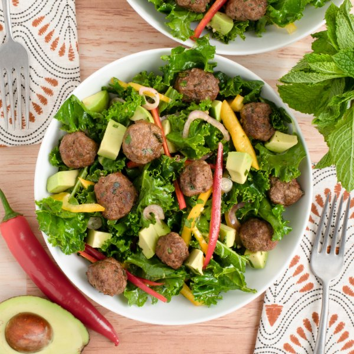

Spicy Thai-Inspired Meatball Salad with Kale, Peppers & Fresh Herbs

Prep Time
35 min
Nutrition (per serving)
660.1 kcalCalories
38.1 gProtein
29 gCarbs
45.5 gFat
Full nutrition table
| Calories | 660.1 kcal |
| Total fat | 45.5 g |
| Saturated fat | 12.6 g |
| Trans fat | 1.5 g |
| Cholesterol | 115.7 mg |
| Sodium | 169.2 mg |
| Carbohydrates | 29 g |
| Fiber | 7.8 g |
| Sugars | 11.5 g |
| Protein | 38.1 g |
| Potassium | 1530.2 mg |
| Calcium | 199.7 mg |
| Iron | 7.7 mg |
| Vitamin A | 524.1 IU |
| Vitamin C | 256.6 mg |
| Vitamin D | 5.1 IU |
Cookware
Ingredients
- 1avocado
- 1 small bunchcilantro
- 1 small pkgfresh mint
- 2 clovesgarlic
- 2 buncheskale
- 1 ½ lblean ground beef
- 2limes
- 2red chili peppers
- 1shallot
- 2yellow bell peppers
- black pepper
- brown sugar
- coriander, ground
- fish sauce
- salt
- soy sauce
- toasted sesame oil
- turmeric, ground
Steps
- Wash and dry the fresh produce.1 small bunch cilantro
1 small pkg fresh mint
2 limes
2 bunches kale
2 red chili peppers
2 yellow bell peppers
1 avocado - Shave cilantro leaves off the stems; pick mint leaves off the stems. Discard stems and mince the leaves. Divide herbs between two large bowls.
- Add beef and spices to one of the bowls with the herbs (set the other bowl aside for the dressing); use your hands to combine the beef mixture. Using a scant tablespoon, form the mixture into mini meatballs and place on a plate.1 ½ lb lean ground beef
1 tsp coriander, ground
1 tsp turmeric, ground
1 tsp salt
½ tsp black pepper - Preheat a large skillet over medium-high heat.
- Once the skillet is hot, add oil and swirl to coat the bottom; add meatballs and cook, turning occasionally, until cooked through, about 5 minutes. Remove from heat.4 tsp toasted sesame oil
- Meanwhile, peel and mince garlic; add to the second bowl with the herbs.2 cloves garlic
- Juice limes into the bowl, then add oil, fish sauce, sugar, soy sauce, and pepper; whisk to combine the dressing.2 tbsp toasted sesame oil
4 tsp fish sauce
4 tsp brown sugar
2 tsp soy sauce
½ tsp black pepper - Fold kale leaves in half lengthwise and slice off the stems; chop or tear leaves into bite-sized pieces and add to the bowl with the dressing. Using your hands, massage kale with the dressing until wilted, 1-2 minutes.
- Halve chili peppers lengthwise; seed and remove ribs with a spoon. Thinly slice and add to the bowl. (Be careful with chilis; do not touch your eyes and ensure you wash your hands after handling or wear gloves while preparing.)
- Trim, seed, and halve bell peppers crosswise, then slice into thin strips; add to the bowl.
- Peel, halve, and slice shallot into thin half-moons; add to the bowl.1 shallot
- Halve and pit avocado; scoop out with a spoon and medium dice the flesh. Add to the bowl and gently toss to combine the salad.
- To serve, divide salad between plates or bowls; top with meatballs and enjoy!